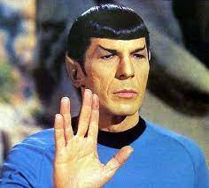

Leonard Nimoy
as Spock

1931 - 2015
Leonard Nimoy was an actor, author, director, singer and photographer. His most well know role was that of Spock in
the Star Trek franchise. The character is a half-vulcan half human star fleet officer. Together with James Kirk and the crew
of the USS Enterprise, they explore the far reaches of space. Leonard portrayed Spock from 1964, in Star Trek: The Origina Series
to 2013 in the recent reboot film, Star Trek Into Darkness.
Timeline
1931 Born in Boston, MA.
1951 First acting role in Queen for a Day.
1964 Filmed the pilot for Star Trek.
1966 Starred in Star Tre: The Original Series.
1979 Starred in the first of 8 Star Trek films.
2015 Passed away in Los Angeles, CA.